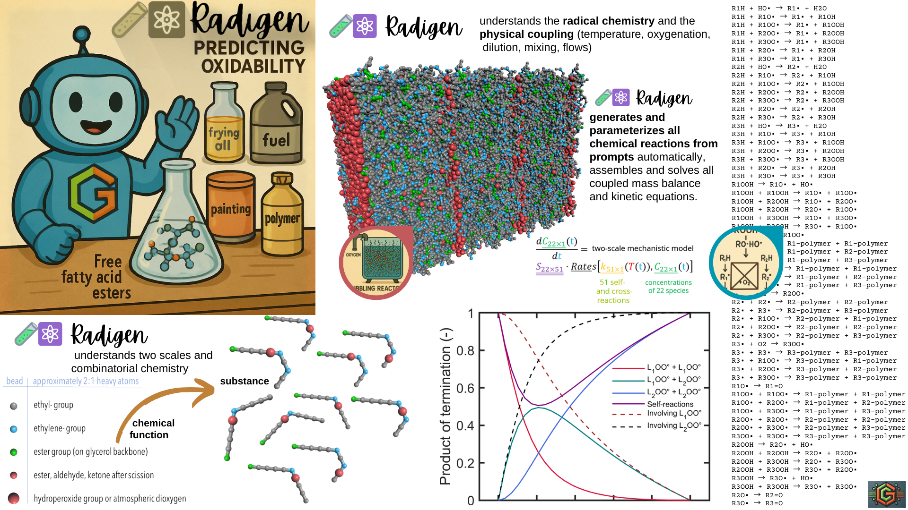

Radigen 🧪⚛️
Radigen is a compact Python kernel for simulating radical oxidation mechanisms in complex mixtures such as edible oils, biofuels, and polymers. It supports the generative construction, parameterization, and numerical resolution of complex chemical reaction networks, with full support for dynamic thermal and oxygenation conditions.
Radigen is part of the Generative Simulation Initiative, and is designed for prompt-based modeling and LLM-driven scientific reasoning.

🎨 Credits: Olivier Vitrac
📚 Table of Contents
📚🔬 1 | Scientific Foundation
Radigen is based on two peer-reviewed frameworks for oxidation kinetics in unsaturated systems:
Touffet M., Smith P., Vitrac O., A comprehensive two-scale model for predicting the oxidizability of fatty acid methyl ester mixtures, Food Research International, 173, 2023, 113289. https://doi.org/10.1016/j.foodres.2023.113289
Touffet M., Vitrac O., Temperature-dependent kinetics of unsaturated fatty acid methyl esters: Modeling autoxidation mechanisms, Food Chemistry, 481, 2025, 143952. https://doi.org/10.1016/j.foodchem.2025.143952
🧠🛠️ 2 | Core Capabilities
✅ Declarative species and reaction network construction
✅ Combinatorial generation of mono/bimolecular reactions
✅ Cross-reaction inference from self-reactions
✅ Rate constant assignment from structured fingerprint database
✅ Temperature + viscosity effects (Arrhenius & Smoluchowski)
✅ Cage ↔ free hydroperoxide decomposition equilibrium
✅ O₂ transport coupling via Henry’s law and dissolution kinetics
✅ Dynamic temperature & kO₂ cycles with
TKO2cycle✅ Chained simulations, physical mixing of partially oxidized systems
✅ High-level plotting, DataFrame output, and lumped species
✅ Built-in support for LLM prompts, aiding scientific simulation
🤖🧠 3 | LLM Integration
Radigen was designed for prompt-based simulation and LLM-assisted reasoning. Its modular architecture allows:
Easy mapping from LLM prompt to chemical simulations
Access to symbolic names (e.g.,
L1OOH,L2•) and grouped observablesHigh-quality examples showcasing realistic oxidation scenarios
Support for mixing, renewal, dynamic profiles, and chemical interrogation
💡 Example Prompts:
“Simulate oxidation of linolenic acid at 180°C with oxygen limitation.”
“What happens when abused oil is mixed with fresh oil?”
“Generate a kinetic profile under cooling from 160°C to 40°C.”
🚀📦 4 | Quick Start
from radigen3.oxidation import mixture, mixtureKinetics
oil = mixture()
oil.add("L1H", concentration=3000)
oil.add("L1OOH", concentration=100)
oil.add("O2", concentration=10)
oil.addProducts()
oil.addReactions()
oil.populateReactionRates()
oilmodel = mixtureKinetics(oil)
oilmodel.solve((10, "days"), T=60)
oilmodel.plot(["L1H", "L1OOH", "O2"])
⚗️ 5 | Example Scenarios
Radigen includes worked-out examples such as simulate\_oil.py and test\_oxidation.py, including:
Scenario 1: Oxidation at 140°C for 1 hour
Scenario 2: Long-term oxidation at 80°C for 100 hours
Scenario 3: Dynamic cycle (180°C → 40°C over days)
Scenario 4: Partial renewal (abused + pristine oil, then storage)
Unit tests: Oxidation under anoxia and with oxygen excess
🖼️ Each simulation includes ready-to-use plot() methods, with export support via fig.print(filename, folder).
♾️⚗️ 6 | Combinatorial Radical Chemistry
Overview
Radigen generates all reactions and paramaterized them according to combinatorial rules. The following script spans a reaction scheme involving 27 species and 60 reactions.
oil = mixture()
oil.add("L1H",concentration=3000)
oil.add("L2H",concentration=1000)
oil.add("L3H",concentration=500)
oil.add("L1OOH",concentration=100)
oil.add("O2",concentration=10)
oil.addProducts()
oil.addReactions()
oil.populateReactionRates()
print("Considered reaction Scheme", "-"*30, oil.reactionScheme, sep="\n")
oilmodel = mixtureKinetics(oil) # kinetic model
oilmodel.solve((10,"days"),60)
oilmodel.plot()
df = oilmodel.results_as_dataframe(["L1H","L2H","L3H","L1OOH","L2OOH","L3OOH"])
print(df)
Click here to see results
⏱ 60 reactions involving 27 species were generated, including:
*R0: L1H + HO• → L1• + H2O,
*R1: L1H + L1O• → L1• + L1OH,
*R2: L1H + L1OO• → L1• + L1OOH,
*R3: L1H + L2OO• → L1• + L2OOH,
*R4: L1H + L3OO• → L1• + L3OOH,
*R5: L1H + L2O• → L1• + L2OH,
*R6: L1H + L3O• → L1• + L3OH,
*R7: L2H + HO• → L2• + H2O,
*R8: L2H + L1O• → L2• + L1OH,
*R9: L2H + L1OO• → L2• + L1OOH,
*R10: L2H + L2OO• → L2• + L2OOH,
*R11: L2H + L3OO• → L2• + L3OOH,
*R12: L2H + L2O• → L2• + L2OH,
*R13: L2H + L3O• → L2• + L3OH,
*R14: L3H + HO• → L3• + H2O,
*R15: L3H + L1O• → L3• + L1OH,
*R16: L3H + L1OO• → L3• + L1OOH,
*R17: L3H + L2OO• → L3• + L2OOH,
*R18: L3H + L3OO• → L3• + L3OOH,
*R19: L3H + L2O• → L3• + L2OH,
*R20: L3H + L3O• → L3• + L3OH,
*R21: L1OOH → L1O• + HO•,
*R22: L1OOH + L1OOH → L1O• + L1OO•,
*R23: L1OOH + L2OOH → L1O• + L2OO•,
*R24: L1OOH + L2OOH → L2O• + L1OO•,
*R25: L1OOH + L3OOH → L1O• + L3OO•,
*R26: L1OOH + L3OOH → L3O• + L1OO•,
*R27: L1• + O2 → L1OO•,
*R28: L1• + L1• → L1-polymer + L1-polymer,
*R29: L1• + L2• → L1-polymer + L2-polymer,
*R30: L1• + L3• → L1-polymer + L3-polymer,
*R31: L1• + L1OO• → L1-polymer + L1-polymer,
*R32: L1• + L2OO• → L1-polymer + L2-polymer,
*R33: L1• + L3OO• → L1-polymer + L3-polymer,
*R34: L2• + O2 → L2OO•,
*R35: L2• + L2• → L2-polymer + L2-polymer,
*R36: L2• + L3• → L2-polymer + L3-polymer,
*R37: L2• + L1OO• → L2-polymer + L1-polymer,
*R38: L2• + L2OO• → L2-polymer + L2-polymer,
*R39: L2• + L3OO• → L2-polymer + L3-polymer,
*R40: L3• + O2 → L3OO•,
*R41: L3• + L3• → L3-polymer + L3-polymer,
*R42: L3• + L1OO• → L3-polymer + L1-polymer,
*R43: L3• + L2OO• → L3-polymer + L2-polymer,
*R44: L3• + L3OO• → L3-polymer + L3-polymer,
*R45: L1O• → L1=O,
*R46: L1OO• + L1OO• → L1-polymer + L1-polymer,
*R47: L1OO• + L2OO• → L1-polymer + L2-polymer,
*R48: L1OO• + L3OO• → L1-polymer + L3-polymer,
*R49: L2OO• + L2OO• → L2-polymer + L2-polymer,
*R50: L2OO• + L3OO• → L2-polymer + L3-polymer,
*R51: L3OO• + L3OO• → L3-polymer + L3-polymer,
*R52: L2OOH → L2O• + HO•,
*R53: L2OOH + L2OOH → L2O• + L2OO•,
*R54: L2OOH + L3OOH → L2O• + L3OO•,
*R55: L2OOH + L3OOH → L3O• + L2OO•,
*R56: L3OOH → L3O• + HO•,
*R57: L3OOH + L3OOH → L3O• + L3OO•,
*R58: L2O• → L2=O,
*R59: L3O• → L3=O
A star indicates that the reaction has been correctly parameterized.
✚⚗️ 7 | Extending Radical Chemistry
Radigen automatically generates all chemically valid reactions by combining species according to their reactive functions, including hydrogen abstraction, radical recombination, and hydroperoxide decomposition. Each species class defines:
Its reactive function (e.g.,
"CH"for allylic hydrogen)Which functions it reacts with (e.g.,
"HO•","COO•")The product class to form (e.g.,
monoAllylicC)A default name and root, which are used to infer product names
An optional color and linestyle for visualization
🧬 7.1 | Example: Hydrogen Abstraction from Oleic Acid (L1H)
The species L1H is defined using a class that encodes its reactivity:
@species.register
class monoAllylicCH(species):
"""Aliphatic (CH) on monoallylic site"""
classAliases = ['C1H', 'R1H', 'L1H', 'P1H']
defaultName = "L1H"
defaultRoot = "L1"
suffix = "H"
allylic = 1
reactiveFunction = "CH"
reactWith = ['HO•', 'CO•', 'COO•']
product = ['monoAllylicC']
This declares that:
L1Hcan lose a hydrogen (H abstraction)It reacts with radicals such as
HO•,COO•, etc.The product is a
monoAllylicCradical (usually namedL1•)
🔢 7.2 | Reaction Generation
When you run:
oil.addProducts()
oil.addReactions()
Radigen:
Constructs new species like
L1•andL1OHusing registered rules.Creates all valid reactions like:
L1H + L1O• → L1• + L1OH
L1H + HO• → L1• + H2O
Assigns reaction rate constants by matching reaction fingerprints.
🧾 7.3 | Rate Constant Assignment
Reaction rates are assigned from a curated database (reactionRateDB) using string-based fingerprints such as:
reactionRateDB(
fingerprint="L1H + L1O• -> L1• + L1OH",
T0=30, # reference temperature (°C)
k0=3.80e3, # rate constant at T0 [m³·mol⁻¹·s⁻¹]
Ea=14.0e3, # activation energy [J/mol]
source="Touffet et al. 2023, Table 2"
)
Fingerprints use canonical formatting and names.
Each fingerprint may be associated with multiple entries (e.g., confidence intervals, sources).
Cross-reactions inherit rate constants via geometric mean rules (from collision theory).
🔄 7.4 | Fingerprint Substitution
Radigen supports symbolic substitution to simplify fingerprint management. For instance:
reactionRateDB.register_fingerprint_substitution(r"C([123])", r"L\1")
This maps "C1H" → "L1H", allowing fingerprints like:
C1H + C1O• → C1• + C1OH
to reuse existing data for L1H reactions.
📦📁 8 | Project Structure
radigen/
├── radigen3/
│ ├── oxidation.py # main kernel (>4 Klines)
│ └── ...
├── simulate_oil.py # main simulation scenarios
├── test_oxidation.py # validation and baseline examples
├── README.md
├── images/ # printed figures as PNG and PDF images
├── docs/ # code documentation
└── literature/ # manuscripts and constant tables
🔧 9 | Installation
Radigen is a self-contained kernel distributed as a single module file: radigen3/oxidation.py (∼4,000+ lines of fully documented code).
No pip install is required.
📁 Recommended Project Layout
Place your scripts in a folder alongside radigen3/:
radigen/
├── radigen3/
│ └── oxidation.py # main module (kernel)
├── yourscript.py # your example or project scripts
...
└── README.md
This allows direct usage of all core classes without installation:
from radigen3.oxidation import mixture, mixtureKinetics, TKO2cycle
This strategy:
Enables version isolation and multiple coexisting Radigen versions.
Avoids
sys.pathmanipulation or environment modification.Is ideal for prompt-driven or LLM-assisted scripting workflows.
🚩If you use notebooks (e.g.,
Jupyter), just ensure the notebook is run from the folder containingradigen3/.
🧩📘 10 | Core Classes
Module radigen3.oxidation
Class |
Purpose |
|---|---|
|
Represents chemical species (radicals, peroxides, stable) |
|
Canonical reaction with fingerprint and type inference |
|
Registry of rate constants (k₀, Eₐ) searchable by fingerprint |
|
Encodes physical/chemical system: species, V, A, T, kO₂, pO₂ |
|
Numerical integrator for the chemical system (solve_ivp) |
|
Group of species for aggregate observables |
|
Dynamic temperature and kO₂ definition for advanced scenarios |
Class Inheritance Diagram (without species-derived classes)
graph TD;
PrintableFigure
TKO2cycle
lumped
mixture
mixtureKinetics
reaction
reactionRateDB
species
Figure --> PrintableFigure
object --> TKO2cycle
object --> mixture
object --> mixtureKinetics
object --> reaction
object --> reactionRateDB
object --> species
species --> lumped
Class Inheritance Diagram (with species-derived classes)
graph TD;
H2O
PrintableFigure
TKO2cycle
diAllylicC
diAllylicCH
diAllylicCHO
diAllylicCO
diAllylicCOH
diAllylicCOO
diAllylicCOOH
diAllylicCeqO
lumped
mixture
mixtureKinetics
monoAllylicC
monoAllylicCH
monoAllylicCHO
monoAllylicCO
monoAllylicCOH
monoAllylicCOO
monoAllylicCOOH
monoAllylicCeqO
oxygen
peroxyl
reaction
reactionRateDB
species
terminationPolymers
triAllylicC
triAllylicCH
triAllylicCHO
triAllylicCO
triAllylicCOH
triAllylicCOO
triAllylicCOOH
triAllylicCeqO
Figure --> PrintableFigure
object --> TKO2cycle
object --> mixture
object --> mixtureKinetics
object --> reaction
object --> reactionRateDB
object --> species
species --> H2O
species --> diAllylicC
species --> diAllylicCH
species --> diAllylicCHO
species --> diAllylicCO
species --> diAllylicCOH
species --> diAllylicCOO
species --> diAllylicCOOH
species --> diAllylicCeqO
species --> lumped
species --> monoAllylicC
species --> monoAllylicCH
species --> monoAllylicCHO
species --> monoAllylicCO
species --> monoAllylicCOH
species --> monoAllylicCOO
species --> monoAllylicCOOH
species --> monoAllylicCeqO
species --> oxygen
species --> peroxyl
species --> terminationPolymers
species --> triAllylicC
species --> triAllylicCH
species --> triAllylicCHO
species --> triAllylicCO
species --> triAllylicCOH
species --> triAllylicCOO
species --> triAllylicCOOH
species --> triAllylicCeqO
🧺🧫 11 | Lumped Species
Radigen offers built-in grouping functions to track hydroperoxides, aldehydes, ketones, radicals and polymers:
oilmodel.register_lumped("LOOH", oil.lumped_hydroperoxides())
oilmodel.register_lumped("rad_C", oil.lumped_radicals_on_C())
df = oilmodel.results_as_dataframe(["L1H", "LOOH", "rad_C"])
Custom groups by pattern or reactive function:
peroxyls = oil.get_lumped_by_pattern(r".*OO•$")
cooh_group = oil.get_lumped_by_function("COOH")
🧬 12 | Chemistry Assumptions
Allylicity matters:
L1H,L2H,L3Hrepresent mono-, di-, and triallylic protons.Glycerol backbone is ignored; triglycerides are approximated by FAMEs (fatty methyl esters).
O₂ transport modeled via gas-liquid interface (Henry’s law +
kO2)Thermodynamic equilibrium (stability of H-bonds) governs ROOH cage vs. free mechanism.
📜 License
MIT License – see LICENSE.
📣 Contact
Developed under the Generative Simulation Initiative 🌱 Lead: Olivier Vitrac Contact: olivier.vitrac@gmail.com
Last updated: 2025-05-23